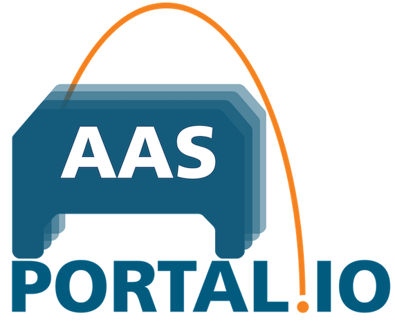

AASPortal
AASPortal 

AASPortal is a Node.js based web portal for the visualization and management of Asset Administration Shells (AAS). The implementation uses the concepts of the document "Details of the Asset Administration Shell" published on https://www.plattform-i40.de and licensed under Creative Commons CC BY 4.0. Check out the Getting Started section to learn how to setup Visual Studio Code and start using and developing the AASPortal. Learn more about the Architecture of AASPortal, and check out the Usage section to learn about available search filters for AAS and which Endpoints can be connected to the AASPortal.
For more details about the AASPortal see the full documentation :blue_book: here. AASPortal is under active development and we are looking forward to your active contributions!
Prerequisites
- Visual Studio Code
- Node.js
- Docker Desktop
Getting Started
You can find a detailed documentation :blue_book: here
Dockerhub
The easiest way to run AASPortal locally, is using the latest "all in one" image from Dockerhub:
docker run -p 80:80 fraunhoferiosb/aasportal_aio
Then go to http://localhost/ in your browser and enjoy.
Setup Visual Studio Code
The preferred development environment is Visual Studio Code. Clone AASPortal's GIT repository. Open aasportal in Visual Studio Code. In a terminal window execute the the following commands:
npm install
and
npm run build -ws
restart Visual Studio Code.
Start AASPortal
The following command creates and executes a Docker image:
npm run start
Go to: http://localhost/
Changelog
You can find the detailed changelog here.
Contributors
| Name | Github Account |
|---|---|
| Ralf Aron | ralfaron |
| Alexander Wollbrink | AlexanderWollbrink |
| Juilee Tikekar | juileetikekar |
| Florian Pethig | fpethig |
Contact
aasportal@iosb-ina.fraunhofer.de
License
Distributed under the Apache 2.0 License. See LICENSE for more information.
Copyright (C) 2023, Fraunhofer IOSB-INA Lemgo, eine rechtlich nicht selbstaendige Einrichtung der Fraunhofer-Gesellschaft zur Foerderung der angewandten Forschung e.V., Germany
You should have received a copy of the Apache 2.0 License along with this program. If not, see https://www.apache.org/licenses/LICENSE-2.0.html.